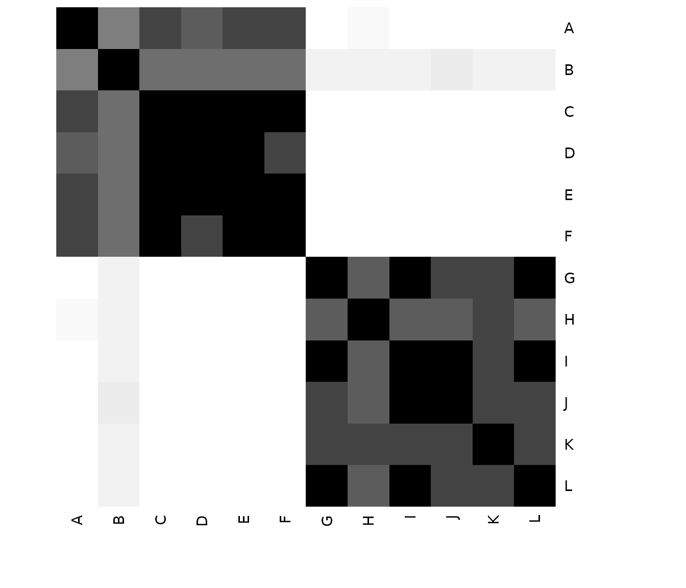

A fitted edge model contains samples from the posterior distribution of every edge weight. Each sample (or draw) is one possible network that is consistent with the data. Most functions in bisonR summarise these draws, but they can also be used directly, for example to calculate quantities that bisonR does not provide. Calculating a quantity separately for each draw gives a posterior distribution for it, which includes the uncertainty in the edge weights.
This article covers extracting the draws, converting them to
igraph networks, calculating new metrics and contrasts, and
saving fitted models.
Simulated data
We simulate 12 individuals in two groups, north and
south. Edge weights on the logit (log-odds) scale are
higher within groups (mean -0.5) than between groups (mean -2.5). Each
dyad is observed in between 3 and 20 sampling periods, so some edges are
estimated more precisely than others.
num_nodes <- 12
nodes <- LETTERS[1:num_nodes]
group <- rep(c("north", "south"), each = 6)
dyads <- t(combn(num_nodes, 2))
same_group <- group[dyads[, 1]] == group[dyads[, 2]]
logit_weight <- ifelse(same_group, -0.5, -2.5) + rnorm(nrow(dyads), 0, 0.5)
effort <- sample(3:20, nrow(dyads), replace = TRUE)
df <- data.frame(
node_1_id = factor(nodes[dyads[, 1]], levels = nodes),
node_2_id = factor(nodes[dyads[, 2]], levels = nodes),
event = rbinom(nrow(dyads), effort, plogis(logit_weight)),
effort = effort
)
fit_edge <- bison_model(
(event | effort) ~ dyad(node_1_id, node_2_id),
data = df,
model_type = "binary_conjugate",
priors = get_default_priors("binary_conjugate")
)Edge list samples
draw_edgelist_samples() returns an edge list with one
column per posterior draw:
edge_draws <- draw_edgelist_samples(fit_edge, num_draws = 4, transform = TRUE)
head(edge_draws)
#> node_1 node_2 draw.1 draw.2 draw.3 draw.4
#> 1 A B 0.30139845 0.3284193 0.1774744 0.1092031
#> 2 A C 0.42150282 0.4866997 0.5301535 0.2012906
#> 3 A D 0.29216088 0.1921143 0.2499467 0.2233080
#> 4 A E 0.63263122 0.6240880 0.5558653 0.6252474
#> 5 A F 0.57280806 0.6233624 0.5138863 0.5705295
#> 6 A G 0.07934855 0.2433655 0.2399075 0.2707410With transform = TRUE, the edge weights are on the
natural scale (probabilities for binary models, rates for count models).
The default, transform = FALSE, gives them on the link
scale (logit or log). This format can be used with other software that
expects an edge list, by repeating the analysis for each draw.
Converting to igraph
bison_to_igraph() returns a list of igraph
networks, one per posterior draw. Every network contains all of the
nodes in the edge model, in the same order, with edge weights on the
natural scale in the weight edge attribute:
nets <- bison_to_igraph(fit_edge, num_draws = 500)
length(nets)
#> [1] 500
nets[[1]]
#> IGRAPH 0bcd734 UNW- 12 66 --
#> + attr: name (v/c), weight (e/n)
#> + edges from 0bcd734 (vertex names):
#> [1] A--B A--C A--D A--E A--F A--G A--H A--I A--J A--K A--L B--C B--D B--E B--F
#> [16] B--G B--H B--I B--J B--K B--L C--D C--E C--F C--G C--H C--I C--J C--K C--L
#> [31] D--E D--F D--G D--H D--I D--J D--K D--L E--F E--G E--H E--I E--J E--K E--L
#> [46] F--G F--H F--I F--J F--K F--L G--H G--I G--J G--K G--L H--I H--J H--K H--L
#> [61] I--J I--K I--L J--K J--L K--LAssortment by a node attribute
Many functions in igraph ignore edge weights. In a bisonR network,
every dyad in the model has an edge in every draw, so an unweighted
function returns the same value in every draw. For example,
igraph::assortativity_nominal() does not use weights:
group_id <- as.integer(factor(group))
assort_unweighted <- sapply(nets, igraph::assortativity_nominal, types = group_id, directed = FALSE)
unique(round(assort_unweighted, 6))
#> [1] -0.090909Before using an igraph function, check that it uses the
weight attribute, or pass the weights explicitly. Weighted
modularity measures how much edge weight falls within the given groups,
compared with what would be expected from each node’s strength alone.
Here it is calculated for the division into the two groups:
modularity_group <- sapply(nets, function(net) {
igraph::modularity(net, membership = group_id, weights = igraph::E(net)$weight)
})
quantile(modularity_group, probs = c(0.05, 0.5, 0.95))
#> 5% 50% 95%
#> 0.1193811 0.1727293 0.2219346The 90% credible interval (the range containing 90% of the posterior) is above zero, so more edge weight falls within groups than expected, consistent with the simulation. Whether a given value is large depends on the network, and comparisons with null models or with other networks may be needed to interpret it.
Community detection
Community detection can also be applied to each draw. Here
igraph::cluster_louvain(), which uses the
weight attribute, is applied to each network:
memberships <- lapply(nets, function(net) igraph::membership(igraph::cluster_louvain(net)))
table(sapply(memberships, function(m) length(unique(m))))
#>
#> 2 3 4
#> 432 67 1The table gives the number of draws in which each number of communities was found. Community labels are arbitrary and change between draws, so they cannot be compared directly. Instead, the uncertainty can be summarised by how often each pair of nodes is placed in the same community:
co_assignment <- matrix(0, num_nodes, num_nodes, dimnames = list(nodes, nodes))
for (m in memberships) {
co_assignment <- co_assignment + outer(m, m, "==")
}
co_assignment <- co_assignment / length(memberships)
round(co_assignment, 2)
#> A B C D E F G H I J K L
#> A 1.00 0.78 0.93 0.90 0.93 0.93 0.02 0.09 0.02 0.02 0.04 0.01
#> B 0.78 1.00 0.82 0.81 0.82 0.83 0.12 0.15 0.13 0.16 0.14 0.13
#> C 0.93 0.82 1.00 0.97 1.00 0.98 0.01 0.02 0.00 0.01 0.00 0.00
#> D 0.90 0.81 0.97 1.00 0.97 0.95 0.02 0.02 0.02 0.02 0.01 0.02
#> E 0.93 0.82 1.00 0.97 1.00 0.98 0.01 0.01 0.00 0.01 0.00 0.00
#> F 0.93 0.83 0.98 0.95 0.98 1.00 0.01 0.03 0.01 0.02 0.01 0.01
#> G 0.02 0.12 0.01 0.02 0.01 0.01 1.00 0.88 0.96 0.93 0.93 0.98
#> H 0.09 0.15 0.02 0.02 0.01 0.03 0.88 1.00 0.87 0.89 0.94 0.87
#> I 0.02 0.13 0.00 0.02 0.00 0.01 0.96 0.87 1.00 0.95 0.92 0.98
#> J 0.02 0.16 0.01 0.02 0.01 0.02 0.93 0.89 0.95 1.00 0.93 0.94
#> K 0.04 0.14 0.00 0.01 0.00 0.01 0.93 0.94 0.92 0.93 1.00 0.92
#> L 0.01 0.13 0.00 0.02 0.00 0.01 0.98 0.87 0.98 0.94 0.92 1.00Each value is the proportion of draws in which the two nodes were in
the same community. Nodes A to F (the north group) and G to
L (the south group) are usually assigned to the same
community as other members of their group. Node B is less consistently
assigned than the other nodes: it is in the same community as the other
north nodes in about 80% of draws, and with each
south node in between 12% and 16% of draws.
The co-assignment matrix can be plotted as a heatmap:
heatmap(co_assignment, symm = TRUE, Rowv = NA, scale = "none",
col = grey.colors(20, start = 1, end = 0))
Standardised metrics
With standardise = TRUE, extract_metric()
mean-centres a metric within each posterior draw, so each value is the
difference between a node and the mean of all nodes in that draw:
strength_std <- extract_metric(fit_edge, "node_strength", standardise = TRUE)
round(t(apply(strength_std, 2, quantile, probs = c(0.05, 0.5, 0.95))), 2)
#> 5% 50% 95%
#> A 0.00 0.58 1.22
#> B -0.75 -0.21 0.43
#> C -0.96 -0.49 -0.01
#> D -0.56 -0.04 0.57
#> E 0.10 0.66 1.23
#> F -0.25 0.25 0.77
#> G -0.78 -0.25 0.36
#> H -0.88 -0.28 0.33
#> I -0.44 0.12 0.71
#> J -0.96 -0.45 0.09
#> K -0.79 -0.25 0.36
#> L -0.35 0.24 0.85This is useful when the overall level of the metric is uncertain but the question is about the relative position of nodes. For example, the 90% interval for node E is above zero, so E has a higher strength than the average node in at least 95% of draws.
Edge-level contrasts
Differences (contrasts) between edges can be calculated from the edge
weight samples. extract_metric(fit, "edge_weight") returns
one column per dyad, named after the dyad:
edge_weights <- extract_metric(fit_edge, "edge_weight")
colnames(edge_weights)[1:6]
#> [1] "A <-> B" "A <-> C" "A <-> D" "A <-> E" "A <-> F" "A <-> G"The posterior probability that one edge is stronger than another is the proportion of draws in which it is larger. For example, for the edges between A and F and between A and B:
mean(edge_weights[, "A <-> F"] > edge_weights[, "A <-> B"])
#> [1] 0.984
quantile(edge_weights[, "A <-> F"] - edge_weights[, "A <-> B"], probs = c(0.05, 0.5, 0.95))
#> 5% 50% 95%
#> 0.1041062 0.3861927 0.6565449In this example, the edge between A and F is stronger than the edge between A and B in about 98% of draws.
Both columns must come from the same matrix.
extract_metric() and bison_to_igraph() choose
posterior draws at random, so two separate calls return different draws.
Pairing columns from different calls would ignore the correlation
between quantities within a draw. In the same way, calculate any
quantity that combines several edges or nodes, such as the mean edge
weight within groups, row by row from a single matrix. Here the columns
are selected by dyad name:
dyad_names <- paste(df$node_1_id, df$node_2_id, sep = " <-> ")
within_names <- dyad_names[same_group]
between_names <- dyad_names[!same_group]
mean_within <- rowMeans(edge_weights[, within_names])
mean_between <- rowMeans(edge_weights[, between_names])
quantile(mean_within - mean_between, probs = c(0.05, 0.5, 0.95))
#> 5% 50% 95%
#> 0.1600625 0.2091942 0.2560990The 90% credible interval of the difference in mean edge weight between within-group and between-group dyads is above zero.
Saving and loading models
Models fitted with Stan (the software bisonR uses to sample from the
posterior) store their draws in temporary files, so a file saved with
saveRDS() alone may not load in a new R session.
bison_save() reads all draws into memory before saving, and
bison_load() loads the model:
path <- tempfile(fileext = ".rds")
bison_save(fit_edge, path)
fit_loaded <- bison_load(path)
all.equal(get_edgelist(fit_edge), get_edgelist(fit_loaded))
#> [1] TRUEThe loaded model can be used in the same way as the original, for
example with extract_metric(),
bison_to_igraph() or bison_brm(). In a real
analysis, save the model to a permanent location rather than a temporary
file.